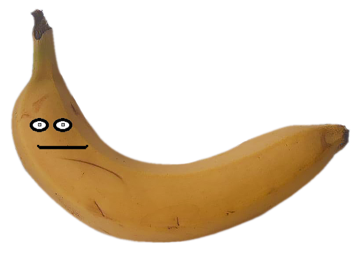

The Assemblage


Behold the fading of life
Food is one of the main resources of our survival, something divine, life-giving and, unfortunately, mortal. That is why we make the life of food eternal by capturing it in a digital picture.
We want to make you understand how perishable everything that surrounds us is and teach you to appreciate all ordinary things for most of us while we still have them.